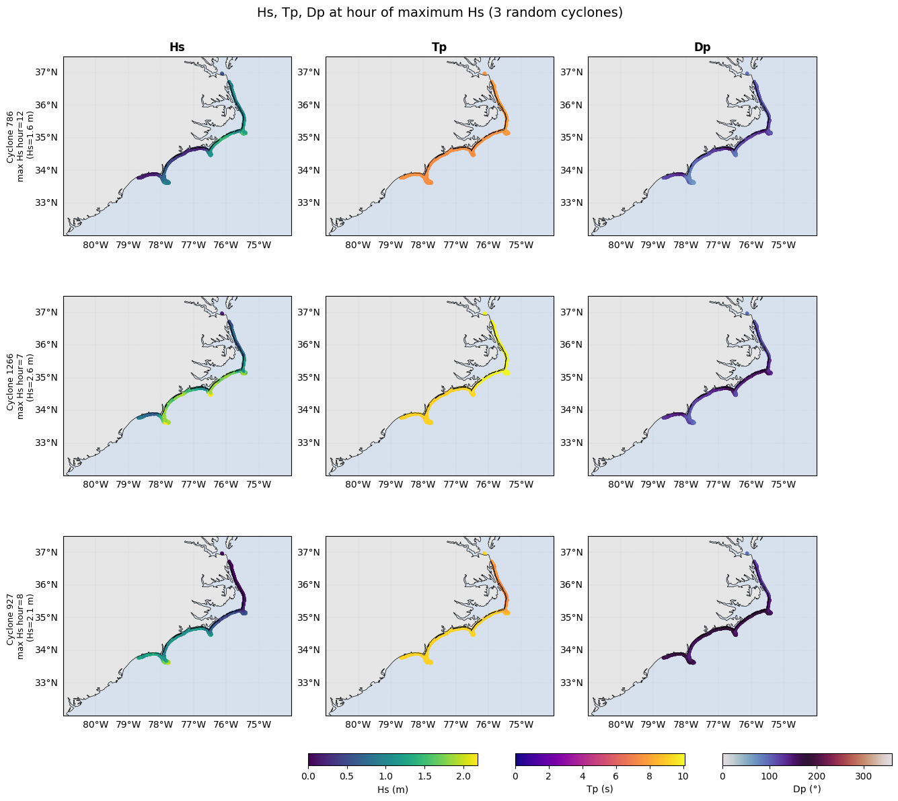

Cyclone Partitions Compact PTM4#
This workflow keeps cyclone methodology but reduces file count:
one file per grid+cyclone containing all variables
optional one file per cyclone merged across all grids
No BMUs or JSON statistics are generated.
Pipeline#
Read reconstructed spectra per grid and cyclone id.
Filter sites to isobath 500 m points (KDTree tolerance).
Compute full-spectrum bulk vars + PTM4 partitions.
Save one compact NetCDF per grid+cyclone with all variables.
Optionally smooth-merge grids and save one NetCDF per cyclone.
import sys
from pathlib import Path
PROJECT_ROOT = Path('.').resolve()
if str(PROJECT_ROOT) not in sys.path:
sys.path.insert(0, str(PROJECT_ROOT))
from paths import GEBCO_FILE, ISOBATH_GEOJSON, predicted_emu_tracks
GRID_NAMES = ['grid1', 'grid2', 'grid3', 'grid4']
WIND_DATA_PATH = predicted_emu_tracks('ssp585')
ISOBATH_POINTS_FILE = ISOBATH_GEOJSON
COMPACT_DIR = PROJECT_ROOT / 'outputs' / 'partitions_cyclones_compact_ptm4_v1'
MERGED_DIR = PROJECT_ROOT / 'outputs' / 'merged_cyclones_compact_ptm4_v1'
# Cyclone controls
CYCLONE_START_ID = 0
CYCLONE_END_ID = 1900
MAX_CYCLONES_PER_GRID = None
# For quick tests, use a list like [0,1,2]; keep None for all common IDs
MERGE_ONLY_CYCLONE_IDS = None
SKIP_EXISTING = True
POINT_MATCH_TOL = 1e-6
MERGE_N_JOBS = 4 # process workers; 1 is fine (~15 min for 1828)
SMOOTH_STEEPNESS = 2.0
BLEND_BUFFER_KM = 30.0
TOLERANCE_DEG = 0.001
if str(PROJECT_ROOT) not in sys.path:
from utils import partitions_cyclones_ptm4_compact as pc
COMPACT_DIR.mkdir(parents=True, exist_ok=True)
MERGED_DIR.mkdir(parents=True, exist_ok=True)
print('Project:', PROJECT_ROOT)
print('Compact output:', COMPACT_DIR)
print('Merged output:', MERGED_DIR)
Project: .
Compact output: ./outputs/partitions_cyclones_compact_ptm4_v1
Merged output: ./outputs/merged_cyclones_compact_ptm4_v1
1) Build compact PTM4 partitions (one file per grid+cyclone)#
compact_files = pc.build_compact_ptm4_partitions(
project_root=PROJECT_ROOT,
output_dir=COMPACT_DIR,
grid_names=GRID_NAMES,
wind_data_path=WIND_DATA_PATH,
gebco_file=GEBCO_FILE,
isobath_geojson=ISOBATH_POINTS_FILE,
cyclone_start_id=CYCLONE_START_ID,
cyclone_end_id=CYCLONE_END_ID,
max_cyclones_per_grid=MAX_CYCLONES_PER_GRID,
point_match_tolerance=POINT_MATCH_TOL,
skip_existing=SKIP_EXISTING,
)
print(f'Generated/available compact files: {len(compact_files)}')
for p in sorted(compact_files)[:10]:
print(' ', p.name)
Isobath points loaded: 2244
[grid1] Processing 1785 cyclone files
[grid1] keeping 401/908 sites
[grid2] Processing 1785 cyclone files
[grid2] keeping 470/1120 sites
[grid3] Processing 1785 cyclone files
[grid3] keeping 648/1627 sites
[grid4] Processing 1785 cyclone files
[grid4] keeping 310/959 sites
Generated/available compact files: 7140
cyclone_0_grid1_allvars_ptm4.nc
cyclone_0_grid2_allvars_ptm4.nc
cyclone_0_grid3_allvars_ptm4.nc
cyclone_0_grid4_allvars_ptm4.nc
cyclone_1000_grid1_allvars_ptm4.nc
cyclone_1000_grid2_allvars_ptm4.nc
cyclone_1000_grid3_allvars_ptm4.nc
cyclone_1000_grid4_allvars_ptm4.nc
cyclone_1001_grid1_allvars_ptm4.nc
cyclone_1001_grid2_allvars_ptm4.nc
2) Discover common cyclone IDs#
common_ids = pc.discover_compact_cyclone_ids(COMPACT_DIR, GRID_NAMES, intersection=True)
print('Common cyclone IDs across all grids:', len(common_ids))
if common_ids:
print('min/max:', common_ids[0], common_ids[-1])
Common cyclone IDs across all grids: 1785
min/max: 0 1784
3) Merge all grids per cyclone (one file per cyclone)#
merged_files = pc.merge_compact_cyclones_smooth(
compact_dir=COMPACT_DIR,
output_dir=MERGED_DIR,
grid_names=GRID_NAMES,
cyclone_ids=MERGE_ONLY_CYCLONE_IDS,
steepness=SMOOTH_STEEPNESS,
blend_buffer_km=BLEND_BUFFER_KM,
tolerance_deg=TOLERANCE_DEG,
skip_existing=SKIP_EXISTING,
n_jobs=MERGE_N_JOBS,
)
print(f'Merged cyclone files: {len(merged_files)}')
for p in sorted(merged_files)[:10]:
print(' ', p.name, f'({p.stat().st_size/1e6:.1f} MB)')
Building merge plan from cyclone 0 (4 grids)...
Merge plan ready: 1356 sites
Merging 1785 cyclones (0 already done), n_jobs=4
Merged cyclone files: 1785
cyclone_0_merged_allvars_ptm4.nc (0.7 MB)
cyclone_1000_merged_allvars_ptm4.nc (0.6 MB)
cyclone_1001_merged_allvars_ptm4.nc (1.1 MB)
cyclone_1002_merged_allvars_ptm4.nc (1.1 MB)
cyclone_1003_merged_allvars_ptm4.nc (0.7 MB)
cyclone_1004_merged_allvars_ptm4.nc (0.4 MB)
cyclone_1005_merged_allvars_ptm4.nc (0.7 MB)
cyclone_1006_merged_allvars_ptm4.nc (0.4 MB)
cyclone_1007_merged_allvars_ptm4.nc (0.9 MB)
cyclone_1008_merged_allvars_ptm4.nc (0.8 MB)
4) Quick check of one merged cyclone file#
import xarray as xr
if merged_files:
sample = sorted(merged_files)[0]
with xr.open_dataset(sample) as ds:
print('Sample:', sample.name)
print('Dims:', dict(ds.sizes))
print('Vars:', list(ds.data_vars))
print('cyclone_id:', ds.coords['cyclone_id'].values)
else:
print('No merged files yet.')
Sample: cyclone_0_merged_allvars_ptm4.nc
Dims: {'time': 24, 'site': 1356}
Vars: ['hs', 'tp', 'tm02', 'dp', 'dm', 'phs0', 'ptp0', 'pdp0', 'spr0', 'phs1', 'ptp1', 'pdp1', 'spr1']
cyclone_id: 0
import random
from pathlib import Path
import cartopy.crs as ccrs
import cartopy.feature as cfeature
import matplotlib.pyplot as plt
import numpy as np
import xarray as xr
MERGED_DIR = Path(
"./outputs/merged_cyclones_compact_ptm4_v1"
)
COMPACT_DIR = Path(
"./outputs/partitions_cyclones_compact_ptm4_v1"
)
GRIDS = ["grid1", "grid2", "grid3", "grid4"]
EXTENT = [-81.0, -74.0, 32.0, 37.5]
RANDOM_SEED = 123
N_CYCLONES = 3
VARS = [
("hs", "Hs (m)", "viridis"),
("tp", "Tp (s)", "plasma"),
("dp", "Dp (°)", "twilight"),
]
def load_cyclone(cid: int) -> xr.Dataset:
"""Load merged cyclone file; fall back to concatenated compact grids if empty."""
merged_path = MERGED_DIR / f"cyclone_{cid}_merged_allvars_ptm4.nc"
if merged_path.is_file():
ds = xr.open_dataset(merged_path)
if np.isfinite(ds["hs"].values).any():
return ds
parts = [
xr.open_dataset(COMPACT_DIR / f"cyclone_{cid}_{grid}_allvars_ptm4.nc")
for grid in GRIDS
if (COMPACT_DIR / f"cyclone_{cid}_{grid}_allvars_ptm4.nc").is_file()
]
if not parts:
raise FileNotFoundError(f"No data found for cyclone {cid}")
return xr.concat(parts, dim="site")
def hour_of_max_hs(ds: xr.Dataset) -> int:
"""Time index where domain-wide maximum Hs occurs."""
hs = ds["hs"].values # (time, site)
return int(np.nanargmax(np.nanmax(hs, axis=1)))
def pick_random_cyclones(n: int = N_CYCLONES, seed: int = RANDOM_SEED) -> list[int]:
rng = random.Random(seed)
ids = sorted(
int(p.stem.split("_")[1])
for p in MERGED_DIR.glob("cyclone_*_merged_allvars_ptm4.nc")
)
rng.shuffle(ids)
selected = []
for cid in ids:
with load_cyclone(cid) as ds:
hs_max = float(np.nanmax(ds["hs"].values))
if np.isfinite(hs_max) and hs_max > 0.5:
selected.append(cid)
if len(selected) >= n:
break
if len(selected) < n:
raise RuntimeError(f"Only found {len(selected)} cyclones with valid data")
return selected
def setup_map(ax):
ax.set_extent(EXTENT, crs=ccrs.PlateCarree())
ax.add_feature(cfeature.LAND, facecolor="0.9", linewidth=0)
ax.add_feature(cfeature.OCEAN, facecolor="lightsteelblue", alpha=0.5, linewidth=0)
ax.add_feature(cfeature.COASTLINE, linewidth=0.5, edgecolor="k")
gl = ax.gridlines(draw_labels=True, linewidth=0.3, alpha=0.5, linestyle="--")
gl.top_labels = False
gl.right_labels = False
cyclone_ids = pick_random_cyclones()
datasets = [load_cyclone(cid) for cid in cyclone_ids]
peak_hours = [hour_of_max_hs(ds) for ds in datasets]
peak_hs = [
float(np.nanmax(ds["hs"].isel(time=h).values))
for ds, h in zip(datasets, peak_hours)
]
hs_vals = [ds["hs"].isel(time=h).values for ds, h in zip(datasets, peak_hours)]
tp_vals = [ds["tp"].isel(time=h).values for ds, h in zip(datasets, peak_hours)]
hs_vmax = max(float(np.nanpercentile(np.concatenate(hs_vals), 99)), 0.01)
tp_vmax = max(float(np.nanpercentile(np.concatenate(tp_vals), 99)), 0.1)
fig, axes = plt.subplots(
N_CYCLONES,
3,
figsize=(14, 12),
subplot_kw={"projection": ccrs.PlateCarree()},
)
scatters = {var: [] for var, _, _ in VARS}
for row, (cid, ds, h, hs_m) in enumerate(
zip(cyclone_ids, datasets, peak_hours, peak_hs)
):
lon = ds["lon"].values
lat = ds["lat"].values
for col, (var, label, cmap) in enumerate(VARS):
ax = axes[row, col]
setup_map(ax)
vals = ds[var].isel(time=h).values
if var == "hs":
vmin, vmax = 0.0, hs_vmax
elif var == "tp":
vmin, vmax = 0.0, tp_vmax
else:
vmin, vmax = 0.0, 360.0
sc = ax.scatter(
lon,
lat,
c=vals,
s=6,
cmap=cmap,
vmin=vmin,
vmax=vmax,
transform=ccrs.PlateCarree(),
)
scatters[var].append(sc)
if row == 0:
ax.set_title(label.split()[0], fontsize=12, fontweight="bold")
if col == 0:
ax.text(
-0.12,
0.5,
f"Cyclone {cid}\nmax Hs hour={h}\n(Hs={hs_m:.1f} m)",
transform=ax.transAxes,
va="center",
ha="right",
fontsize=9,
rotation=90,
)
for i, (var, label, _) in enumerate(VARS):
cax = fig.add_axes([0.36 + i * 0.22, 0.04, 0.18, 0.015])
cb = fig.colorbar(scatters[var][0], cax=cax, orientation="horizontal")
cb.set_label(label)
fig.suptitle("Hs, Tp, Dp at hour of maximum Hs (3 random cyclones)", y=0.98, fontsize=14)
plt.subplots_adjust(left=0.10, bottom=0.08, top=0.94, wspace=0.15, hspace=0.12)
plt.show()
for ds in datasets:
ds.close()
for cid, h, hs_m in zip(cyclone_ids, peak_hours, peak_hs):
print(f"Cyclone {cid}: max Hs hour = {h}, Hs_max = {hs_m:.2f} m")

Cyclone 786: max Hs hour = 12, Hs_max = 1.63 m
Cyclone 1266: max Hs hour = 7, Hs_max = 2.63 m
Cyclone 927: max Hs hour = 8, Hs_max = 2.08 m